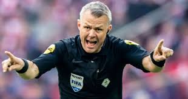

In voetbal zijn er natuurlijk ook regels. Een van de belangrijkste regels is dat een speler niet de bal mag raken met de hand of arm (behalve de keeper). Als de bal over de lijn aan de zijkant gaat, krijgt het andere team een uitworp, de bal moet dan uit de nek in het veld gegooid worden. Als een speler een speler van de tegenstander tackelt zonder de bal aan te raken, is dat een overtreding. Als dit binnen het zestienmetergebied gebeurd krijgt de tegenstander een penalty of een strafschop.
Scheidsrechters zijn natuurlijk ook belangrijk in een voetbalwedstrijd. Er zijn drie soorten scheidsrechters. Als eerste heb je de hoofdscheidsrechter die beslist over alles. Daarnaast heb je twee hulpscheidsrechters aan de zijkant van het veld. Die letten meestal op buitenspel en uitballen. Als laatst heb je scheidsrechters bij het doel. Die letten op of de bal wel 100% over de lijn is.
Naast menselijke scheidsrechters scheidsrechters is er tegen